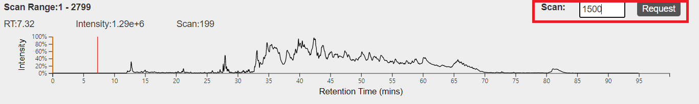
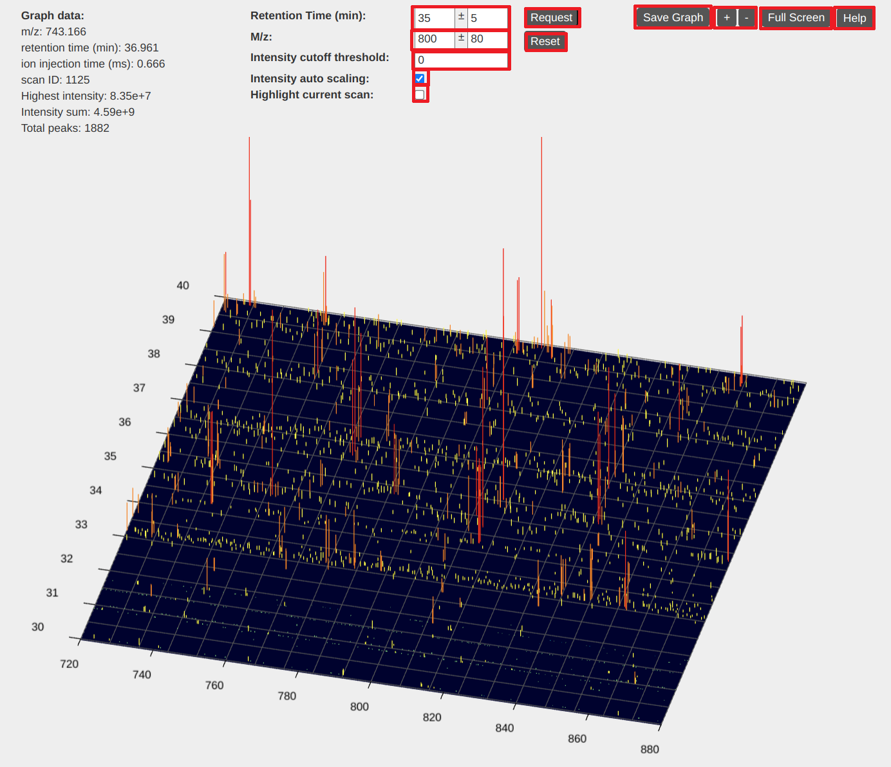
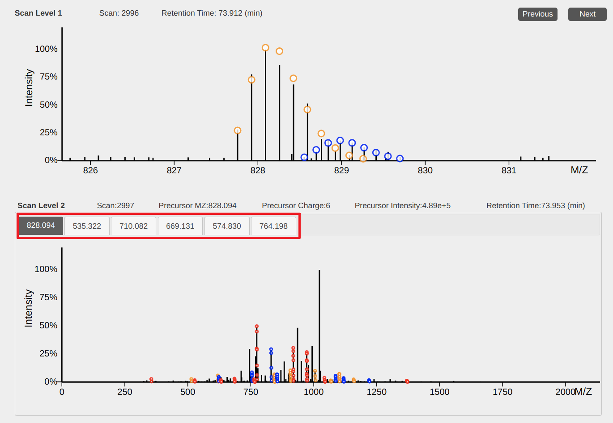
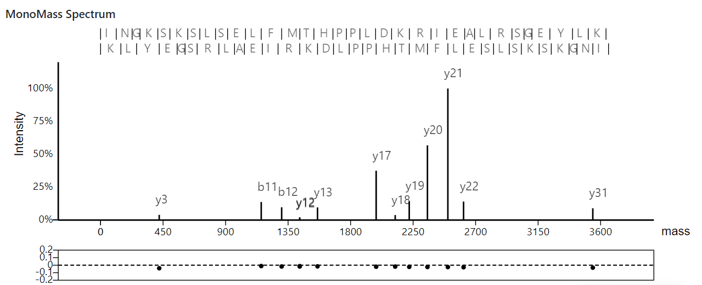

1. The total ion current chromotogram

This view shows the total ion current chromatogram of an LC-MS/MS data.
The x axis represents retention time in minutes and the y axis represents
the sum of all peak intensities being detected at a time point.
Operations:
- Select retention time: move the mouse pointer to a
retention time and click the left button of the mouse.
- Change the current scan: input a scan
number in the text box above the chromotogram and click "request."
2. A 3D view of LC-MS data

In the 3D view of LC-MS data, the x axis represents the m/z
value, the y axis represents the retention time, and the z
axis represents the peak intensity. This view provides visualization
functions of zooming, dragging, and intensity scaling.
Basic operations
- Dragging: hold the left-button of the mouse down and move the
mouse to drag the view.
- Zooming of the m/z value and retention time: place the mouse
pointer in the view and use the mouse wheel to zoom in and out the
view.
- Zooming of the m/z value: place the mouse pointer below or
above the view and use the mouse wheel to zoom in and out the m/z
value of the view.
- Zooming of the retention time: place the mouse pointer left
to or right to the view and use the mouse wheel to zoom in and out the
retention time of the view.
- Intensity scaling: press a CTRL key in the keyboard and use the mouse
wheel to scale peak intensities.
- Rotating: hold the right button of the mouse and move the mouse to
rotate the view.
- Going to a specific position: input the specific m/z value
and retention time in the text boxes above the view and click the
"request" button.
View settings
- Intensity cutoff threshold: input an intensity cutoff
value in the text box "Intensity cutoff value."
- Intensity auto scaling: when checked,
the peak intensities of the view will be automatically adjusted based
on the highest peak in the view.
- Highlight current scan: when checked, a pink line will be drawn on the view, horizontal to the x axis.
It highlights the retention time of the currently selected scan.
Other functions
- Save Graph: save the 3D view to an image file.
- Adjust view size: use the "+" and "-" buttons to increase or
decrease the view size.
- Full Screen: use the "Full screen" button to show the view in full screen.
3. 2D views of mass spectra

The top view shows peaks in an MS1 spectrum and the bottom view shows
peaks in an MS/MS spectrum. When spectral deconvolution results are
available, circles in the views represent the positions of peaks in
theoretical isotopic envelopes and circles for one envelope are shown with
the same color.
Operations
- Dragging: hold the left-button of the mouse down and move the
mouse to drag the view.
- Zooming of the x axis: place the mouse pointer below the x-axis
and use the mouse wheel to zoom in and out the x axis.
- Scaling peak intensities: place the mouse pointer above the x-axis
and use the mouse wheel to scale peak intensities.
- Previous or next MS1 spectrum: click the "previous" or "next"
button to show the previous or next MS1 spectrum.
- Select an MS/MS spectrum: When several precursor ions in the
current MS1 spectrum are selected for MS/MS analyses, click a
precursor m/z value (above the bottom view) to show its corresponding
MS/MS spectrum.
4. A view of monoisotopic mass graphs

This view shows deconvoluted monoisotopic masses in an MS/MS spectrum
and its matched proteoform.
At the top, the identified proteoform sequence and its theoretical
fragment masses are displayed; in the middle, the deconvoluted monoisotopic masses
of the MS/MS spectrum are plotted; at the bottom, the m/z errors between matched
theoretical and experimental masses are drawn in an error plot.
Operations
- Dragging: hold the left-button of the mouse down and move the
mouse to drag the view.
- Zooming of the x axis: place the mouse pointer below the x-axis
and use the mouse wheel to zoom in and out the x axis.
- Scaling peak intensities: place the mouse pointer above the x-axis
and use the mouse wheel to scale peak intensities.